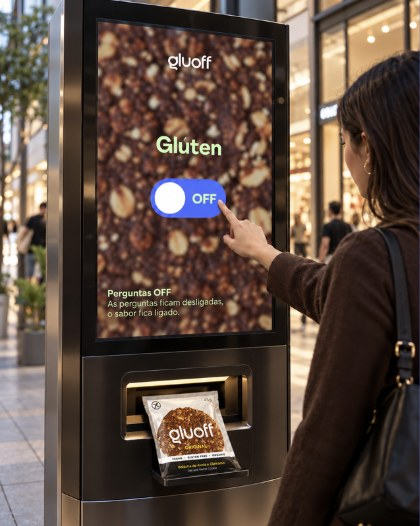

Perguntas off.
Porque comer não devia ser uma preocupação.
Durante o mês de outubroJá pensaste em quantas perguntas fazes antes de comer?
Para muitas pessoas, escolher um snack ou sair para comer com amigos é algo simples. Mas, para quem tem doença celíaca, estes momentos podem trazer dúvidas e preocupações constantes.
“Posso comer isto?” “É seguro para mim?” “Há alguma opção que eu possa escolher?”
São perguntas que fazem parte do dia a dia de muitas pessoas e que, por vezes, acabam por limitar a liberdade de escolha e os momentos de convívio.
As perguntas ficam desligadas. O sabor fica ligado.
Foi a pensar nesta realidade que nasceu a campanha “Sem Perguntas”, uma iniciativa da Gluoff que pretende dar visibilidade às dificuldades de quem vive com doença celíaca e sensibilizar a sociedade para a importância da inclusão alimentar.
Queremos que todos possam sentir-se incluídos à mesa, com acesso a informação clara e a opções adequadas às suas necessidades.
Junta-te a esta mudança!
Ao longo da campanha, vamos partilhar histórias reais, promover conversas e criar experiências que aproximem as pessoas desta realidade.
Através de conteúdos digitais, ativações interativas, queremos mostrar que pequenos gestos e uma maior compreensão podem fazer a diferença no dia a dia de quem tem doença celíaca.
Porque todos merecem aproveitar os bons momentos com confiança, tranquilidade e sabor.
Gluoff — Sem Perguntas.
As perguntas ficam desligadas. O sabor fica ligado.

Perguntas off.
Basta clicar no botão “OFF” e deixar as preocupações de lado. Porque, com a Gluoff, há sempre um ponto de sabor sem glúten por perto, onde todos podem desfrutar sem receios e sem ficar de fora.
As perguntas que
deixam de ser feitas.
Posso comer mesmo não sendo intolerante?
Texto exemplo. A resposta a esta pergunta.
Como sei se os produtos Gluoff são seguros para mim?
Texto exemplo. A resposta a esta pergunta.
Onde posso encontrar os produtos Gluoff?
Podes encontrar produtos Gluoff em lojas especializadas, como o Celeiro e a Maria Granel, em pontos de venda parceiros e em algumas máquinas de venda automática.
A próxima pausa
pode ser gluoff.
Doce ou salgado? Aqui há espaço para ti.
Ver os sabores ↗